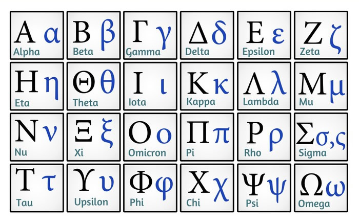

El alfabeto griego es un alfabeto de veinticuatro letras utilizado para escribir la lengua griega. Desarrollado alrededor del siglo IX a. C. a partir del alfabeto consonántico fenicio, los griegos adoptaron el primer alfabeto completo de la historia, entendiéndolo como la escritura que expresa los sonidos individuales del idioma, es decir que prácticamente a cada vocal y cada consonante corresponde un símbolo distinto.
Su uso continúa hasta nuestros días, tanto como alfabeto nativo del griego moderno como a modo de crear denominaciones técnicas para las ciencias, en especial la lógica, la matemática, la física.
